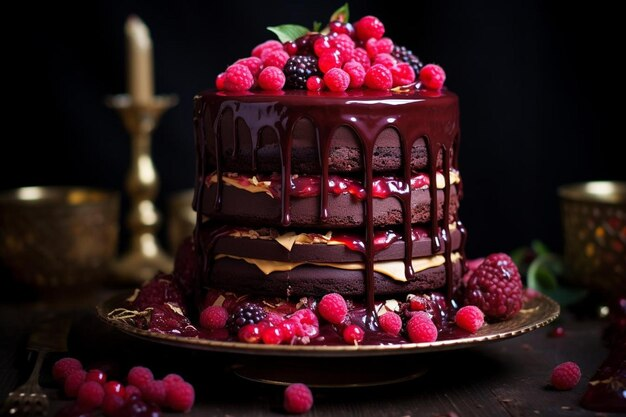

Tarta de chocolate con mousse de frambuesa y ganache de chocolate
Recetas
Recetas
- Ingredientes
Para la base de galleta:
- 200 g de galletas tipo Digestive
- 100 g de mantequilla derretida
Para la mousse de frambuesa:
- 200 g de frambuesas frescas (más algunas para decorar)
- 50 g de azúcar
- 2 huevos (separados)
- 200 ml de nata (crema de leche) para montar
- 3 hojas de gelatina
-Para el ganache de chocolate:
- 200 g de chocolate negro (70% cacao)
- 200 ml de nata (crema de leche)
-Para decorar:
- Frambuesas frescas
- Hojas de menta
Instrucciones
- Paso 1: Preparar la base de galleta
- Precalienta el horno a 180 °C
- Tritura las galletas en un procesador de alimentos hasta que queden como polvo.
- Mezcla el polvo de galleta con la mantequilla derretida. Presiona la mezcla en el fondo de un molde desmontable.
- Paso 2: Preparar la mousse de frambuesa
- Hidrata las hojas de gelatina en agua fría durante unos 5 minutos.
- En una cacerola, calienta las frambuesas con el azúcar hasta que se forme un puré. Cuela para eliminar las semillas.
- Disuelve las hojas de gelatina en el puré caliente y deja enfriar un poco.
- Bate las yemas de huevo en un bol y agrégalas al puré de frambuesa.
- Monta la nata y, una vez que el puré esté templado, incorpora suavemente la nata montada.
- Bate las claras a punto de nieve y añádelas a la mezcla con cuidado.
- Vierte la mousse sobre la base de galleta y refrigera durante al menos 4 horas o hasta que esté firme.
- Paso 3: Preparar el ganache de chocolate
- Retira del fuego y añade el chocolate troceado. Deja reposar unos minutos y luego mezcla hasta obtener una mezcla homogénea.
- Deja enfriar a temperatura ambiente hasta que espese un poco.
- Paso 4: Montaje
- Una vez que la mousse esté firme, vierte el ganache de chocolate sobre la mousse.
- Refrigera de nuevo durante al menos 1 hora.
- Paso 5: Decorar y servir
- Desmolda la tarta con cuidado.
- Decora con frambuesas frescas y hojas de menta.
- Sirve fría y disfruta de este delicioso postre.
